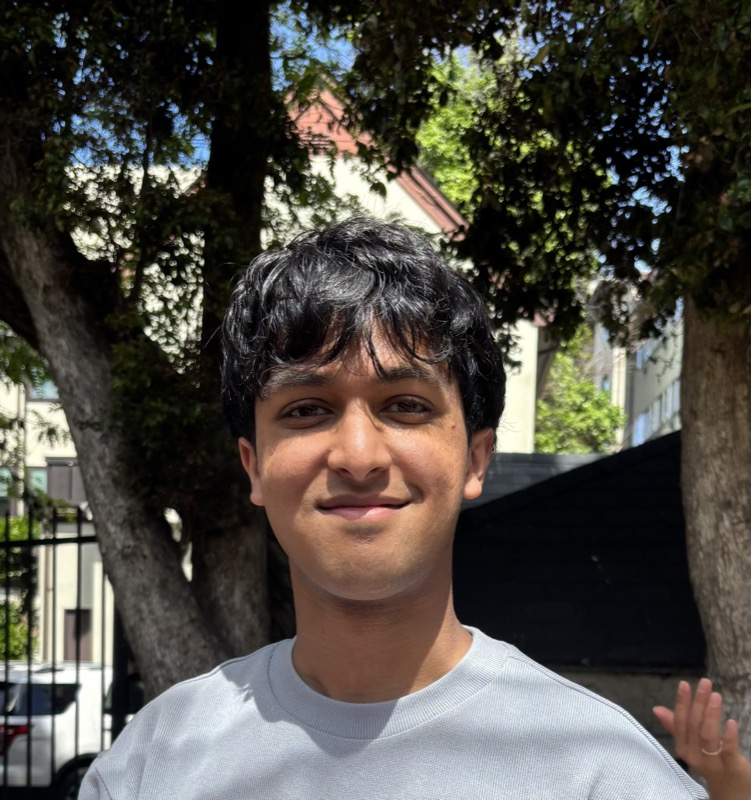

AI Researcher · UC Berkeley
I'm an undergraduate at UC Berkeley studying Electrical Engineering & Computer Science and Engineering Mathematics & Statistics. I do research at Berkeley AI Research (BAIR), advised by Sergey Levine and Kurt Keutzer. Previously, I also worked with Dawn Song.
My research centers on reinforcement learning and the scalable, efficient deployment of agentic and robotic systems. Some of my previous work has centered around building principled frameworks and information-theoretic tools for generating synthetic training data and evaluating LLM agents.
My messages are always open — feel free to reach out if you're interested in talking about reinforcement learning, agentic systems, robotics, or anything in between!

IGFisher-Orthogonal Projected Natural Gradient for Continual LearningUnder Review
Preprint, 2026